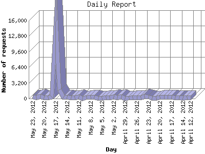

The Daily Report identifies the activity for each day within the reporting period. Remember that one page hit can result in several server requests as the images for each page are loaded.

| Day | Number of requests | Number of page requests | |
|---|---|---|---|
| 1. | April 12, 2012 | 215 | 48 |
| 2. | April 13, 2012 | 235 | 43 |
| 3. | April 14, 2012 | 130 | 29 |
| 4. | April 15, 2012 | 165 | 45 |
| 5. | April 16, 2012 | 170 | 48 |
| 6. | April 17, 2012 | 288 | 55 |
| 7. | April 18, 2012 | 367 | 57 |
| 8. | April 19, 2012 | 286 | 62 |
| 9. | April 20, 2012 | 286 | 59 |
| 10. | April 21, 2012 | 114 | 31 |
| 11. | April 22, 2012 | 83 | 31 |
| 12. | April 23, 2012 | 307 | 45 |
| 13. | April 24, 2012 | 386 | 64 |
| 14. | April 25, 2012 | 177 | 41 |
| 15. | April 26, 2012 | 218 | 49 |
| 16. | April 27, 2012 | 236 | 39 |
| 17. | April 28, 2012 | 80 | 28 |
| 18. | April 29, 2012 | 0 | 0 |
| 19. | April 30, 2012 | 266 | 55 |
| 20. | May 1, 2012 | 189 | 49 |
| 21. | May 2, 2012 | 274 | 60 |
| 22. | May 3, 2012 | 229 | 54 |
| 23. | May 4, 2012 | 261 | 42 |
| 24. | May 5, 2012 | 127 | 33 |
| 25. | May 6, 2012 | 123 | 28 |
| 26. | May 7, 2012 | 324 | 48 |
| 27. | May 8, 2012 | 349 | 54 |
| 28. | May 9, 2012 | 174 | 45 |
| 29. | May 10, 2012 | 0 | 0 |
| 30. | May 11, 2012 | 319 | 30 |
| 31. | May 12, 2012 | 249 | 28 |
| 32. | May 13, 2012 | 193 | 47 |
| 33. | May 14, 2012 | 321 | 47 |
| 34. | May 15, 2012 | 287 | 40 |
| 35. | May 16, 2012 | 1,839 | 30 |
| 36. | May 17, 2012 | 15,803 | 52 |
| 37. | May 18, 2012 | 266 | 39 |
| 38. | May 19, 2012 | 173 | 24 |
| 39. | May 20, 2012 | 248 | 38 |
| 40. | May 21, 2012 | 434 | 56 |
| 41. | May 22, 2012 | 233 | 41 |
| 42. | May 23, 2012 | 357 | 54 |
Most active day April 7, 2012 : 66 pages sent. 15,803 requests handled.
Daily average: 44 pages sent. 669 requests handled.
This report was generated on May 24, 2012 00:17.
Report time frame April 4, 2012 00:19 to May 23, 2012 23:55.
| Web statistics report produced by: analog 5.1 / Report Magic 2.21 |